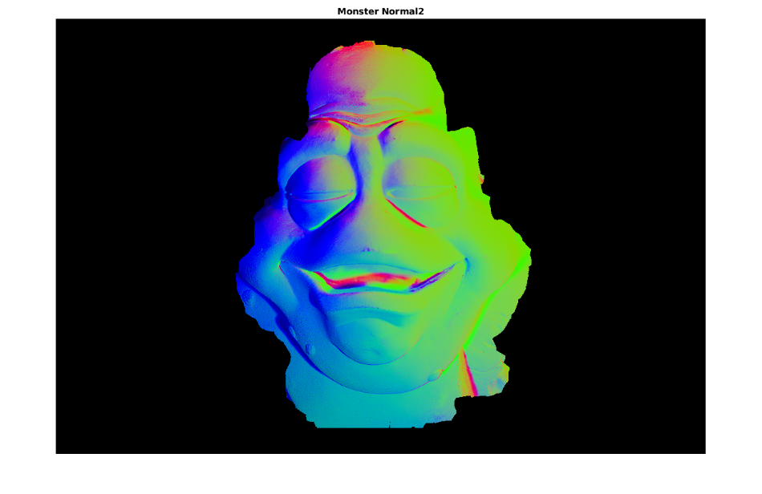
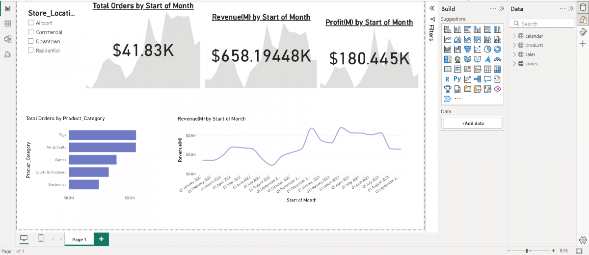

Photometric Stereo
3D Reconstruction, Nov 17, 2022
This project is based on developing a software algorithm for different devices such as laptops and tablets. The software utilises a display that makes sure of photometric stern which uses multiple images from the scene from a fixed viewpoint under different illumination conditions. Photometric stereo is 3D reconstruction technique that uses a single camera.
It is a effective technique for performing face recognition on systems such as security because it is good at extracting high level features using surface normals and projects the detail using the depth map. The project was split into 3 main tasks which were Camera Calibration, Light Calibration and 3D reconstruction. Together this reconstructed the image giving the result shown below.
Toy Dashboard
Data Analysis Presentation, Sep 2, 2024
This is a power bi interactive dashboard created in Power BI. This is the result of cleaning up the cvs data file and connected relational model used to perform new measures and caculations